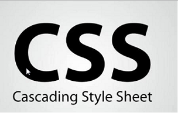
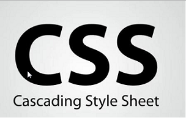

The technology we currently working with is called CSS and NetBeans.
NetBeans is the mother of all programming. We've learned and will
remember many of the items, such as how to put an image on the website,
put background colors to the website, and even create links to other
pages.
Html is more or les the motherboard to the starship. It's the main hub
of where you put your main items, write down and draft paragraphs. In
the normal HTMl, you are able to add vidoes, sound, images, and even links
to external websites such as Youtube.com.
Css is basically the tech world of NetBeans. In Css, we basically adjust,
add on, and extent everything in the website itself. Think of it as the
photoshop of websites, adding background images and changing the font or
the size of the letters.
If you'd like a tutorial to create HTML, Click here!
If you'd like a tutorial to crate CSS, Click here!
If you'd like to know the creator of HTML, Click here!
If you'd like to know more about CSS, Click here!
If you'd like to know more about HTML, Click here!
 
